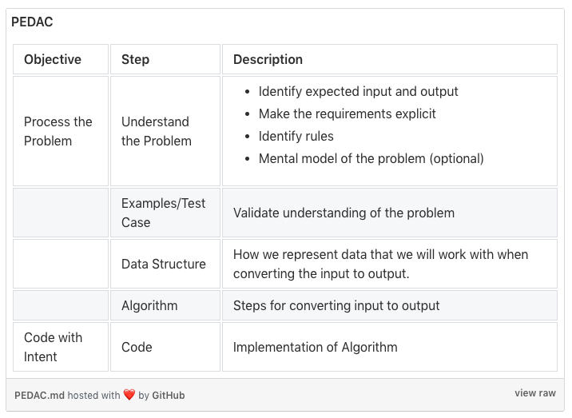

PEDAC stands for “[Understand the] Problem, Examples / Test Cases, Data Structure, Algorithm, and Code.” PEDAC has two primary objectives: process the problem (PEDA) and code with intent (C).
Suppose you have an arbitrary natural number (the target) and a set of one or more additional natural numbers (the factors). Write a program that computes the sum of all numbers from 1 up to the target number that are also multiples of one of the factors.
For instance, if the target is 20, and the factors are 3 and 5, that gives us the list of multiples 3, 5, 6, 9, 10, 12, 15, 18. The sum of these multiples is 78.
If no factors are given, use 3 and 5 as the default factors.
** input: sum_of_multiples(20, [3, 5]) -- returns 78
** input: sum_of_multiples(20, [3]) -- returns 63
** input: sum_of_multiples(20, [5]) -- returns 30
** input: sum_of_multiples(20, []) -- returns 78